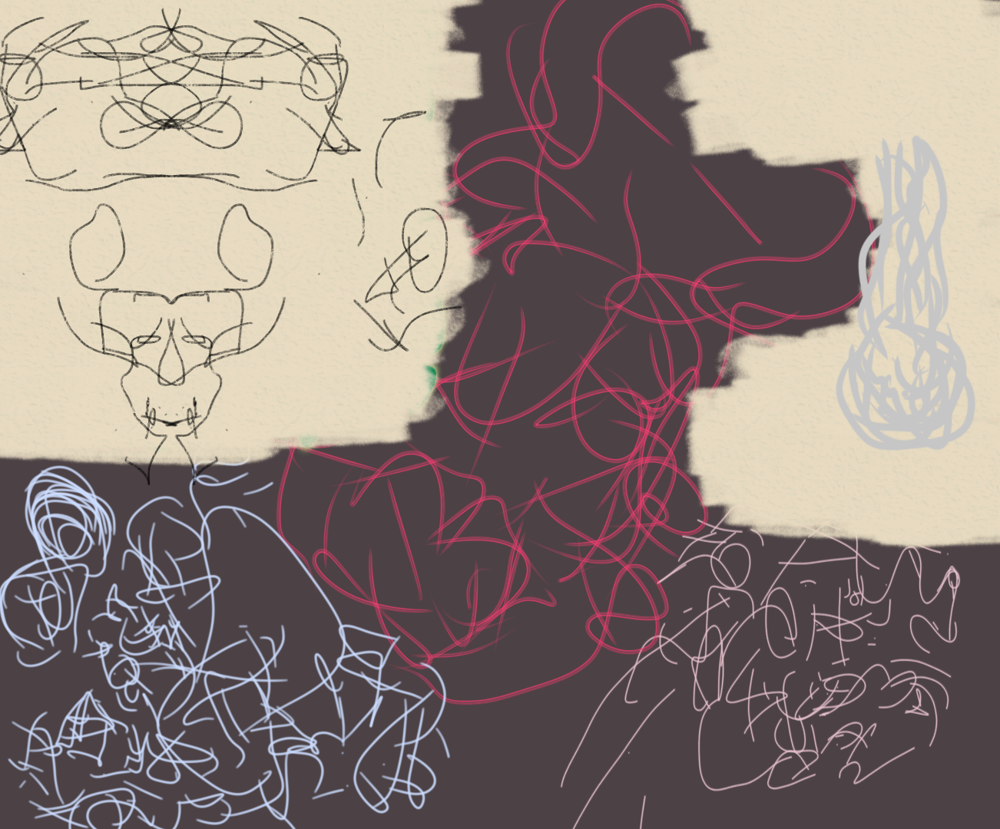
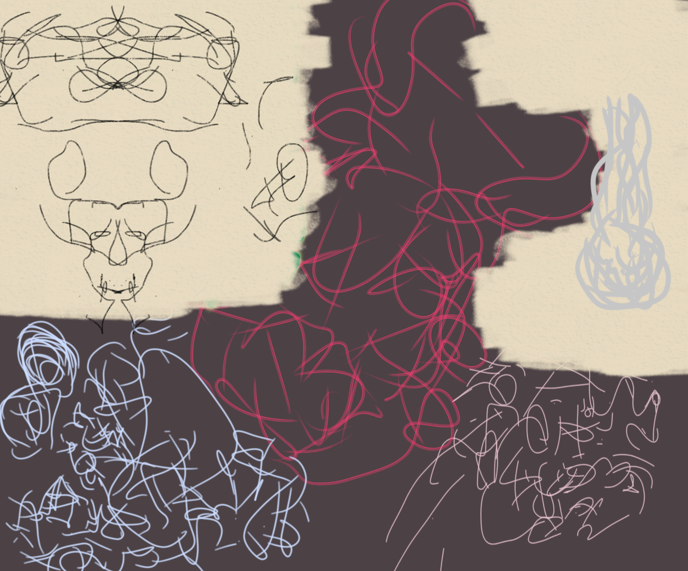
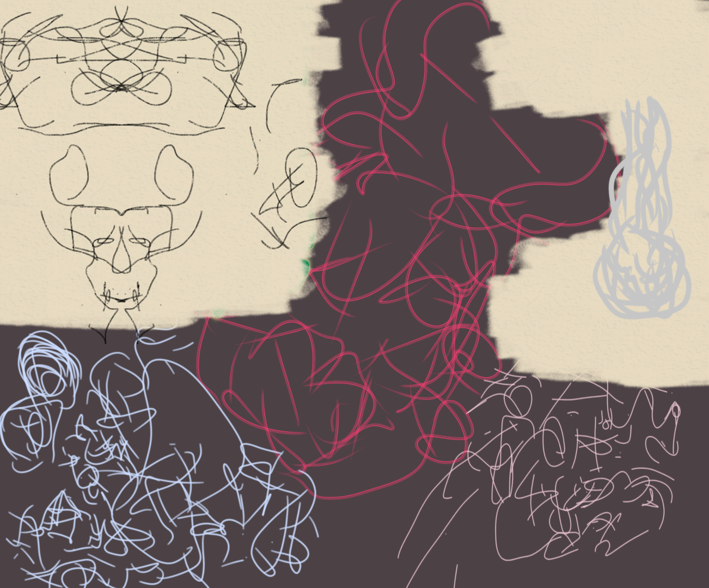

Gallery
 


My name is Khanyisizwe Airborne Mdluli, an emerging visual artist from eSwatini. My journey with art began in grade school, where I often found myself sketching and doodling between lessons. What began as a playful pastime gradually developed into a deeper artistic pursuit as I became more aware of the power of creative expression.
My practice is strongly informed by the legacies of Jean-Michel Basquiat, whose chaotic brilliance revealed the raw possibilities of visual storytelling; Cy Twombly, whose contemporary works challenged the boundaries of form and language; and Amoako Boafo, whose textured brushwork and celebration of identity within the African diaspora continue to inspire me. I also draw inspiration from the broader Afrofuturism movement, which reimagines Black identity, history, and futures through speculative and innovative aesthetics.
Through my work, I seek to explore the intersections of memory, identity, and cultural imagination, blending the spontaneity of expression with an academic appreciation of artistic traditions. My style reflects both personal introspection and a dialogue with global movements that position African creativity at the forefront of contemporary art. Welcome to my portfolio.

Let’s connect! You can reach me via email or follow my work on social platforms: